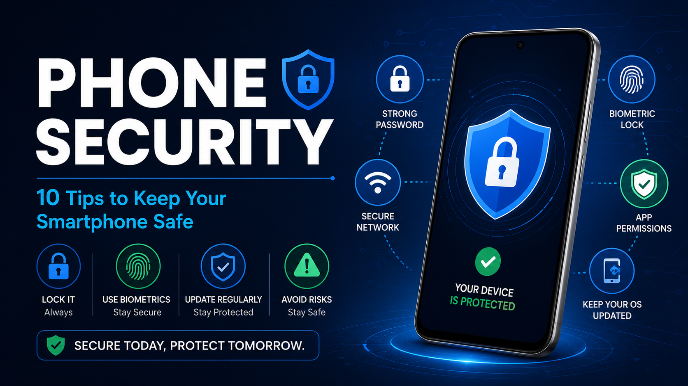

Phone Security Tips: 10 Ways to Keep Your Smartphone Safe (2026 Guide)

Your smartphone is a digital treasure chest. It holds your photos, messages, banking apps, passwords, and access to nearly every aspect of your digital life. With over 6.8 billion smartphone users worldwide, mobile devices have become the #1 target for cybercriminals. In 2026, mobile malware attacks have increased by 75%, and data breaches from smartphones are at an all-time high.
This comprehensive guide will walk you through 10 essential phone security tips to protect your device from hackers, malware, and data theft. Whether you're using Android or iOS, these tips will help you stay safe in an increasingly connected world.
📑 Table of Contents
- 1. Lock Your Device with Strong Authentication
- 2. Keep Your Operating System Updated
- 3. Download Apps Only from Official Stores
- 4. Avoid Public WiFi Networks
- 5. Use a VPN for Secure Browsing
- 6. Enable Two-Factor Authentication (2FA)
- 7. Review App Permissions Regularly
- 8. Use Antivirus and Anti-Malware Software
- 9. Backup Your Data Regularly
- 10. Be Aware of Phishing Scams
1. Lock Your Device with Strong Authentication
The first line of defense against unauthorized access is your device's lock screen. Using a simple 4-digit PIN or a pattern lock is no longer enough. Modern smartphones offer multiple secure authentication methods.
Biometric authentication like fingerprint scanning and facial recognition are now standard on most devices. These methods are not only more secure but also more convenient than typing a password.
- Use fingerprint or face recognition for everyday unlocking
- Set a strong alphanumeric password as a backup
- Enable lock screen timeout (30 seconds or less)
- Disable lock screen notifications to prevent prying eyes
2. Keep Your Operating System Updated
One of the most critical phone security practices is keeping your operating system up to date. Software updates are not just about new features — they contain vital security patches that fix vulnerabilities discovered by security researchers.
Cybercriminals actively look for unpatched devices to exploit. According to cybersecurity reports, over 60% of successful mobile attacks target known vulnerabilities that could have been fixed by an update.
- Enable automatic updates for your operating system
- Update apps regularly through the Play Store or App Store
- Check for updates manually once a month
- Don't ignore update notifications — they're important for security
3. Download Apps Only from Official Stores
Google Play Store and Apple App Store have strict security checks that apps must pass before they're available for download. Third-party app stores often lack these security measures, making them a hotbed for malware and spyware.
Android users should disable "Install from Unknown Sources" in their settings. iOS users are automatically protected as they can only install apps from the App Store by default.
- Only download apps from official stores (Google Play, App Store)
- Check app ratings and reviews before downloading
- Read permissions carefully before installing
- Be cautious of apps with low downloads or few reviews
4. Avoid Public WiFi Networks
Public WiFi networks in cafes, airports, hotels, and shopping malls are notorious for being insecure. Hackers can easily intercept data transmitted over these networks, including passwords, emails, and sensitive personal information.
Man-in-the-middle attacks are common on public WiFi. The attacker can position themselves between your device and the network, capturing everything you send and receive.
- Avoid conducting financial transactions on public WiFi
- Use your mobile data instead of public WiFi for sensitive tasks
- Forget the network after you're done using it
- Enable "Ask to Join Networks" to prevent automatic connections
5. Use a VPN for Secure Browsing
A VPN (Virtual Private Network) is one of the most effective tools for protecting your online privacy. It encrypts your internet traffic, making it virtually impossible for hackers, ISPs, or government agencies to monitor your online activity.
Even on your home WiFi, a VPN adds an extra layer of security. It also masks your IP address, which helps protect your identity and location.
- Choose a reputable VPN provider with a no-logs policy
- Enable VPN auto-connect for automatic protection
- Look for VPNs with kill switch features
- Avoid free VPNs — they often monetize through selling data
6. Enable Two-Factor Authentication (2FA)
Two-Factor Authentication adds an additional layer of security to your online accounts. Even if a hacker manages to steal your password, they won't be able to access your account without the second factor — usually a code sent to your phone.
2FA is now available on virtually all major platforms including email, social media, banking, and cloud storage services. There's no reason not to enable it.
- Enable 2FA on all accounts that offer it
- Use authenticator apps like Google Authenticator or Authy
- Set up backup codes in case you lose access to your phone
- Avoid SMS-based 2FA if possible — it's less secure
7. Review App Permissions Regularly
Many apps request permissions that are completely unnecessary for their core functionality. For example, a flashlight app doesn't need access to your contacts or location. These excessive permissions can be used to collect your data.
Make it a habit to review app permissions periodically. Both Android and iOS now provide clear permission management tools.
- Check app permissions in your phone's settings
- Revoke unnecessary permissions like microphone, camera, or location
- Review permissions when apps are updated
- Delete apps that request excessive permissions
8. Use Antivirus and Anti-Malware Software
While smartphones are generally more secure than PCs, they're not immune to malware. Mobile malware attacks have increased by 75% in 2026, with Android devices being the most targeted.
A good mobile security app can detect and remove malware, block phishing links, and protect your device in real-time.
- Install reputable antivirus software from the official store
- Choose a solution with real-time scanning
- Keep your security app updated
- Run regular scans on your device
9. Backup Your Data Regularly
Data loss can happen for many reasons — device theft, hardware failure, malware, or accidental deletion. Regular backups are your safety net against losing valuable data.
Both Android and iOS offer cloud backup options that make it easy to restore your data if something goes wrong. You should also consider backing up to multiple locations.
- Enable automatic cloud backups (Google Drive, iCloud)
- Backup photos and videos to a separate service
- Create manual backups periodically
- Test your backups to ensure they work
10. Be Aware of Phishing Scams
Phishing is the most common way cybercriminals steal personal information. They use fake emails, texts, or calls that appear to come from legitimate organizations to trick you into revealing your passwords, credit card numbers, or other sensitive data.
Mobile devices are particularly vulnerable to phishing because people often check messages on the go and may not scrutinize them carefully.
- Never click on suspicious links in text messages or emails
- Verify the sender's identity before responding
- Don't share personal information via text or email
- Be suspicious of urgent requests for money or information
Bonus Tip: Use Find My Device
In case your phone is lost or stolen, Find My Device (Android) or Find My iPhone (iOS) can help you locate, lock, or erase your device remotely. This prevents thieves from accessing your personal data.
- Enable Find My Device in your phone's settings
- Keep location services enabled for tracking
- Test the feature to ensure it works
- Use the remote lock and erase features if your phone is stolen
Frequently Asked Questions (FAQ)
What is the most important phone security tip?
The most important phone security tip is to keep your device locked with a strong password, PIN, or biometric authentication like fingerprint or face recognition. This is your first line of defense against unauthorized access.
How can I protect my phone from hackers?
You can protect your phone from hackers by keeping your OS updated, using strong passwords, avoiding public WiFi, installing only trusted apps, and using antivirus software. These measures create multiple layers of security that make it difficult for hackers to breach your device.
Is it safe to use public WiFi on my phone?
Public WiFi is not safe. Hackers can intercept your data on unsecured networks. Always use a VPN when connecting to public WiFi networks to encrypt your data and protect your privacy.
How often should I update my phone software?
You should update your phone software as soon as updates are available. Updates contain critical security patches that protect your device from new and emerging threats. Delaying updates leaves your device vulnerable to known exploits.